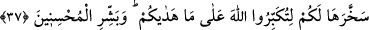

tutup götürür, ayakları üzere dururken tutar bağlar ve boğazlarsınız. Allah emrinize
âmâde kılmasaydı, buna gücünüz yetmezdi ve o hayvanlar da bünyesi kendilerinden
daha küçük ve kuvveti onlardan daha az olan bâzı vahşî hayvanlardan daha âciz
olmazlardı.
37. Onların ne etleri ne de kanları Allah’a ulaşır; fakat O’na sadece sizin
takvânız ulaşır. Sizi hidayete erdirdiğinden dolayı Allah’ı büyük tanıyasınız diye O,
bu hayvanları böylece sizin istifadenize verdi. (Ey Muhammed!) Güzel
davrananları müjdele!
Cahiliye devri insanları, Allah katında yakınlığa sebep olduğunu iddiâ ederek
kurbanlarının kanlarını Kâbe’ye serperler, etlerini yayarlar ve Kâbe’nin çevresine
koyarlardı. Allah, müslümanlara bunu yasaklayarak şöyle buyurdu:
“Onların” et ve kandan ibâret olmaları bakımından “ne” yenilen ve tasadduk edilen
“etleri ne de” boğazlanmak sûretiyle dökülen “kanları Allah’a ulaşır; fakat O’na
sadece sizin takvânız ulaşır.” Bu takvâ, emri yerine getirme kasdı, rızâ talebi ile haram
ve şüpheden sakınmaktır. Burada amelin niyet ve ihlâs olmadan fayda vermeyeceğine
delil vardır. Yâni, kurbanlarınız ancak sizin takvânız sebebiyle kabul görür. Bu takvâ
da, Allah’ın emrine tazim ve makbul olmuş kurban sebebiyle O’na yakınlaşmadır.
Yani, Allah katında makbul olan, sizin haram ve şüpheden uzak bir korunma içinde,
O’nun rızasını dileyerek ihlâsla yaptığınız ve bu ölçüler içinde kesip tasadduk ettiğiniz
kurbanlardır. Bu ayet niyetsiz ve ihlâssız bir amelin hiçbir kıymet ifade etmeyeceğine
bir delildir.
“Sizi hidayete erdirdiğinden dolayı” ya da o hayvanları boyun eğdirme usûlü ve
onların kurban edilme keyfiyetine sizi hidâyet ve irşâd ettiği için “Allah’ı büyük
tanıyasınız diye” O’ndan başkasının güç yetiremediği şeylere güç yetirmesi bakımından
onun azametini tanıyasınız ve büyüklüğü ile O’nun birliğini kabul etmeniz için “O, bu
hayvanları böylece sizin istifadenize verdi.” Hayvanların insanların istifâdesine
verildiğinin tekrar edilmesi, öğüt vermek ve bunun sebebini açıklamak içindir.
“Güzel davrananları” dinleri hususunda yaptıkları ve yapmadıkları her işte ihlâslı
olanları cennetle ya da tâatlarının kabûlü ile “müjdele!”
Şeyhzâde der ki: “Onlar, Allah’a O’nu görüyormuşçasına ibadet eden kimselerdir.
Allah’ın fazlını ve rızâsını isterler. Onları bir şeyi yapmaya ya da terk etmeye ancak bu
istek sevk eder. Bunun emâresi de yaptığı veya terk ettiği hiçbir şeyi ağır bulmamak ve
ondan sıkılmamaktır. Bu ifâdeden maksad, haccın bütün fiillerinde ihsânı üzere olmaya